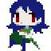

7 |
Personajes |
 |
 No tardarás mucho tiempo en descubrir que Mimiga Island tiene muchos habitantes extraños. Algunos personajes son amigables y otros... no tanto. No tardarás mucho tiempo en descubrir que Mimiga Island tiene muchos habitantes extraños. Algunos personajes son amigables y otros... no tanto.
El protagonista no recuerda su nombre o de donde vino. En su viaje va a aprender sobre su pasado y su objetivo original. Hacer todo lo correcto y, tal vez, salvar a sus amigos de Mimiga!
 Le llaman el número uno en Mimiga Village, una responsabilidad heredada del anterior líder, Arthur. King tiene una obligación con las Mimiga que viven en el pueblo. Él no es el Mimiga más amigable que vas a conocer, pero tiene buenas intenciones. Le llaman el número uno en Mimiga Village, una responsabilidad heredada del anterior líder, Arthur. King tiene una obligación con las Mimiga que viven en el pueblo. Él no es el Mimiga más amigable que vas a conocer, pero tiene buenas intenciones.
 Lo que a Toroko le falta de tamaño, lo complementa con su corazón y encanto. Te será fácil hacerte su amigo. Toroko te da la bienvenida a la isla cuando King y Jack cuestionan tus motivos. Lo que a Toroko le falta de tamaño, lo complementa con su corazón y encanto. Te será fácil hacerte su amigo. Toroko te da la bienvenida a la isla cuando King y Jack cuestionan tus motivos.
 Jack es feliz de ser el número dos en Mimiga Village. Fiel hasta el final, tiene a King cubierto en todo momento. Jack es feliz de ser el número dos en Mimiga Village. Fiel hasta el final, tiene a King cubierto en todo momento.
Usando su mágia casi ilimitada, Misery es en gran medida responsable de la agitación de Mimiga. Por algún motivo, está en busca de alguien llamada Sue.
|
 |
 |
 |